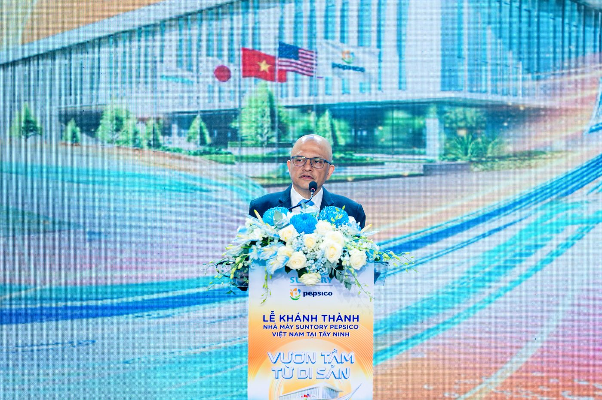
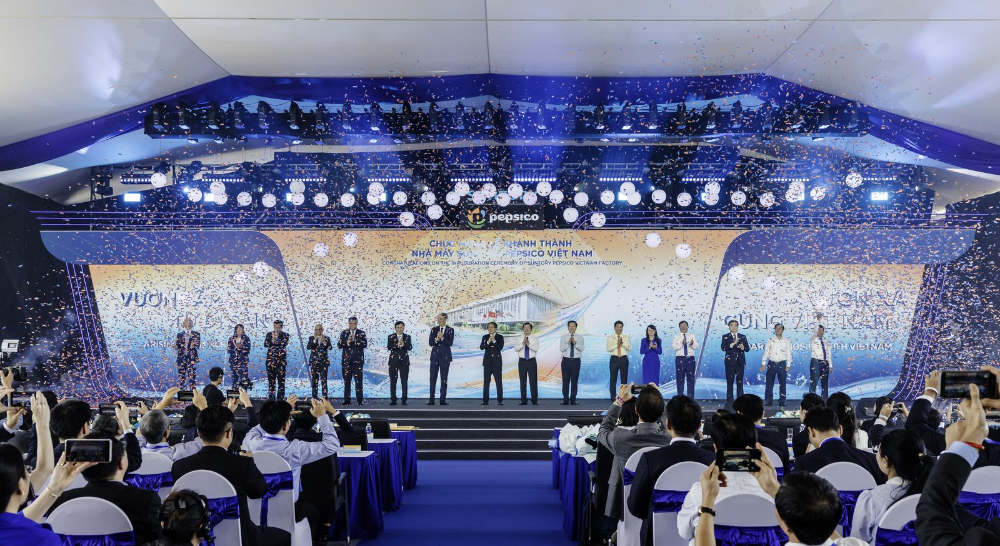

The manufacturing heart of Suntory PepsiCo in Asia
The Suntory PepsiCo Long An Factory is proof of our long-term confidence in Vietnam. This is not merely an investment to expand production capacity; it is a commitment to walk alongside Vietnam on its journey towards sustainable development.
Mr. Ashish Joshi
Chief Executive Officer, Suntory PepsiCo Vietnam
Morning at the Huu Thanh Industrial Park in Duc Hoa commune, Tay Ninh province, begins with the steady rhythm of a factory where the line between people and technology has all but disappeared.
Across dozens of hectares, automated robots move pallets quietly through a smart warehouse system. Production lines run at speeds of up to thousands of cans a minute. From incoming raw materials to packaging, storage and logistics, every stage is linked by real-time data. Everything happens precisely, in step, with almost no room for error.
That is the first impression on entering the Suntory PepsiCo Tay Ninh Factory, a project with total investment of USD 300 million, covering 20 hectares, with a design capacity of more than 1.2 billion litres of product a year. It is not only the largest factory operated by Suntory PepsiCo Vietnam but also the largest production facility of either Suntory or PepsiCo anywhere in Asia-Pacific.
Seen from the province's perspective, the project's value lies in more than the scale of the investment or its production capacity. Speaking at the inauguration ceremony, Mr. Le Van Han, Deputy Secretary of the Provincial Party Committee and Chairman of the Tay Ninh Provincial People's Committee, described the Suntory PepsiCo Long An Factory as a model of advanced technology and sustainable development. Its presence, he said, will help drive technology transfer, build a modern industrial ecosystem and create momentum for digital transformation, while raising the quality of the local workforce and improving the lives of local residents.
What sets this factory apart is the way the company has redefined what "modern manufacturing" means.

Photo · Mr. Ashish Joshi speaking
Photo · Mr. Truong Tan Sang and the delegation of leaders press the inauguration button Photo · A wide view of the modern production line
Photo · A wide view of the modern production line